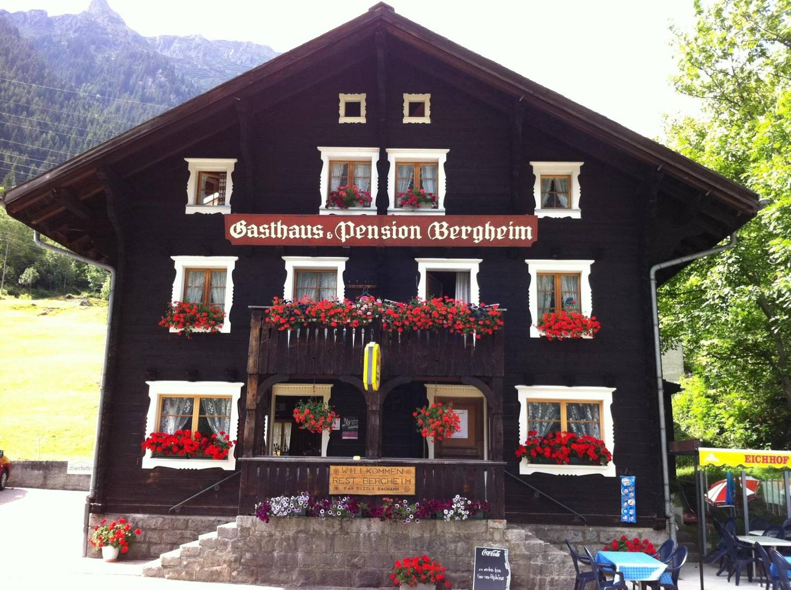
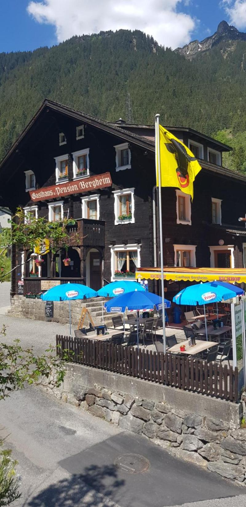
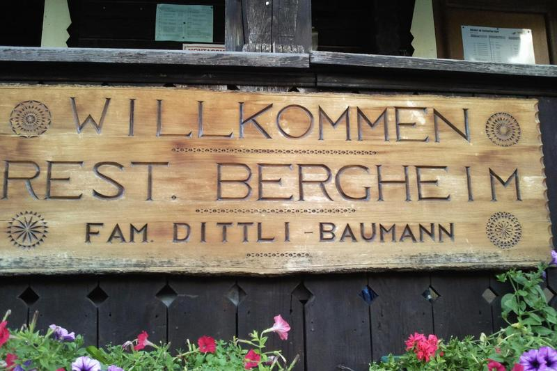
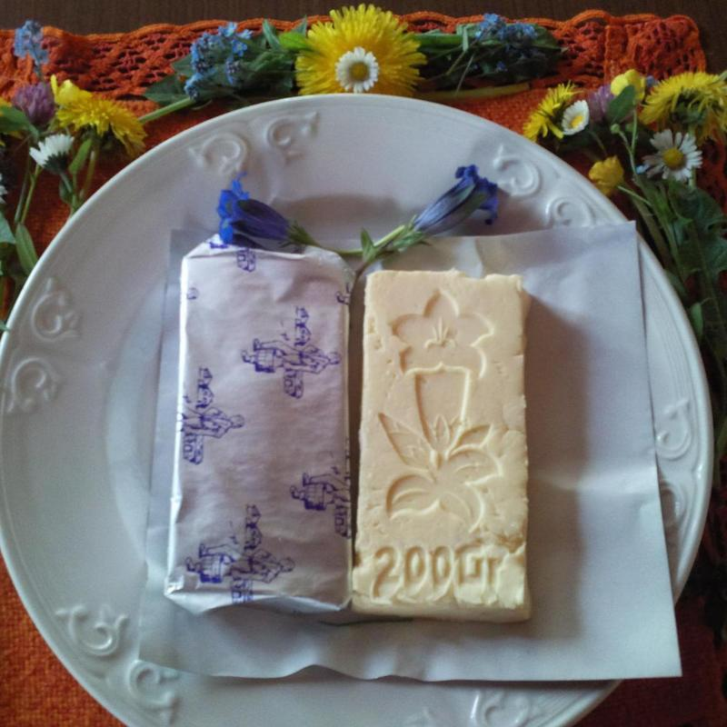
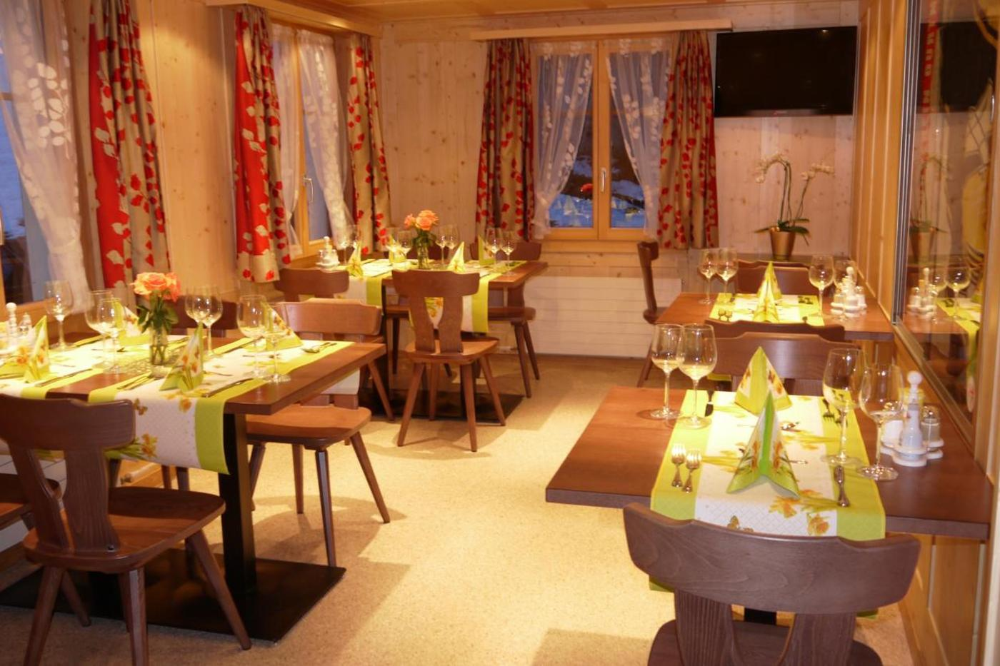
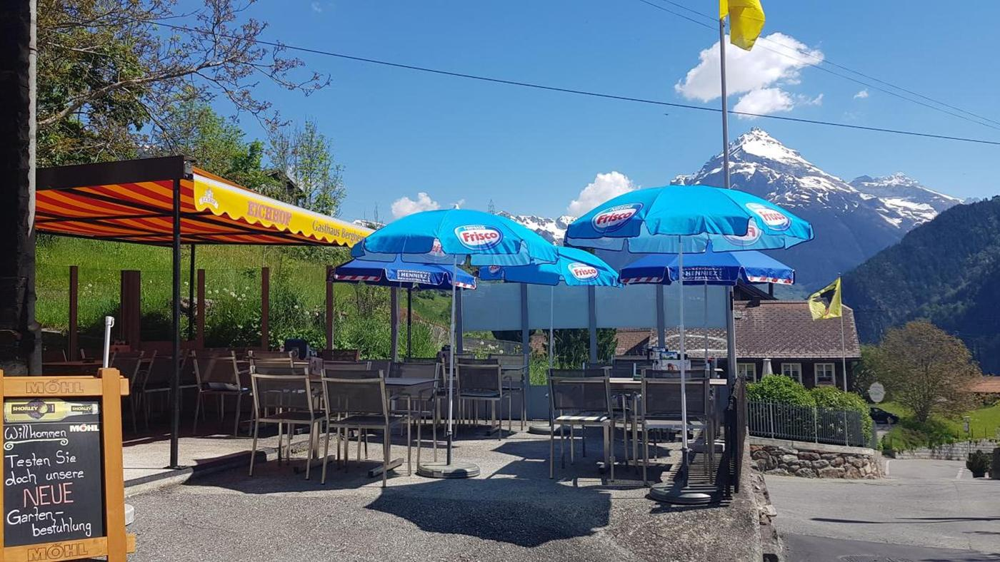
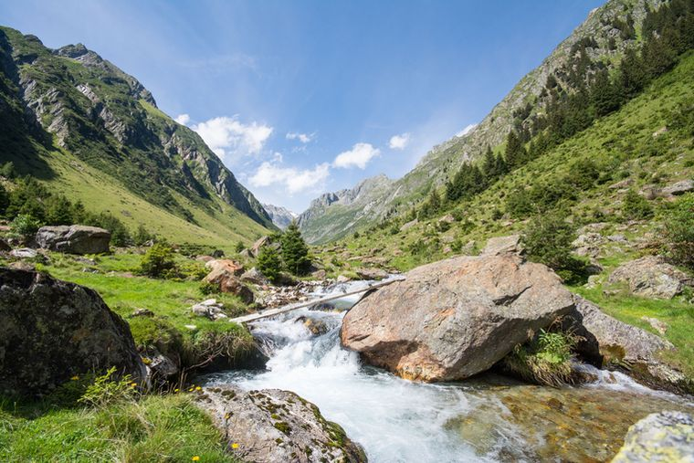

Ab 20. September
Herbstzeit ist Wildzeit
Gems-, Hirsch- und Rehpfeffer aus einheimischer Jagd – mit Spätzli, Rotkraut, Rosenkohl, Marroni und Birnen mit Preiselbeeren. Reservierung empfohlen.
Beta-Vorschau — kein fertiges Design
Gasthaus · Gurtnellen-Dorf · 930 m ü. M.
Heimelige Gaststube, ruhige Sonnenterrasse und zehn Zimmer im Holzhaus – im oberen Reusstal, zwischen Vierwaldstättersee und Gotthardpass.
Freitag bis Dienstag · 08–22 Uhr

8,3von 10 auf Booking.com718 Bewertungen
Stand: 5. Oktober 2026


Willkommen
Das heimelige Gasthaus Bergheim liegt auf 930 Metern über Meer – eine Oase der Ruhe für alle, die dem hektischen Alltag entfliehen möchten. Von hier aus starten gut markierte Wege für Wander- und Biketouren und die grossen Passstrassen.
Astrid Dittli-Baumann führt das Haus familiär: mit Gaststube, Sonnenterrasse und zehn einfachen, behaglichen Gästezimmern.
«A lovely little hotel. The lady owner couldn’t be more helpful. Service is exceptional.»
Gaststube
Das familiär geführte Restaurant bietet Platz für 60 Personen, die Sonnenterrasse für weitere 40. Für den kleinen Hunger gibt es eine grosse Auswahl an Platten und Tellern.



Aktuell
Ab 20. September
Gems-, Hirsch- und Rehpfeffer aus einheimischer Jagd – mit Spätzli, Rotkraut, Rosenkohl, Marroni und Birnen mit Preiselbeeren. Reservierung empfohlen.

Zum Zabig
Ein deftiges Stück Käse von der Gornerenalp. Den Käse können Sie auch zum Mitnehmen kaufen.
Für Ihr Fest
Unser Sääli eignet sich wunderbar für Feste im kleinen Rahmen und bietet Platz für etwa 15 bis 17 Personen.
Zimmer
Unsere Gästezimmer sind einfach, aber behaglich eingerichtet – mit der wohlig warmen Atmosphäre, wie man sie nur in Holzhäusern erlebt. Zehn Einzel-, Doppel- und Familienzimmer für insgesamt 30 Personen.
Unterwegs
Fernab von Alltag und Hektik, durch duftende Bergwälder und blühende Alpwiesen – und über sechs Pässe.
Pässe rundum
Für Motorradfahrerinnen und -fahrer haben wir eine abschliessbare Garage und einen Trockenraum. Von hier aus starten Sie zu unvergesslichen Pässefahrten.
Unzählige Wander- und Biketouren auf gut markierten Wegen. Für Wanderer, Bergsteigerinnen und Mountainbiker gibt es rund um Gurtnellen zahlreiche Möglichkeiten.
Vom Bahnhof Realp fahren sorgfältig restaurierte Nostalgiezüge der Dampfbahn Furka-Bergstrecke in rund zwei Stunden nach Gletsch im Wallis.
SkiArena Andermatt-Sedrun-Disentis mit 180 Pistenkilometern und 33 Liften bis auf knapp 3000 Meter, Langlaufloipe Urserntal, Winterwandern und Schlitteln.
Gästestimmen
8,3von 10 · 718 Bewertungen auf Booking.com
«Family owned. Brilliant atmosphere. Great base to drive the passes.»
«The staff was very kind, and the rooms were incredibly clean. Beautiful view on the mountains and comfortable beds. We stayed here as a stop on our drive to Italy.»
«Beautiful location, warm welcome, help parked my motorbike in a secure garage, even help me to dry my motorbike clothes.»
Alle 718 Bewertungen auf Booking.com lesen Originalzitate, abgerufen am 5. Oktober 2026
Anreise
Bitzistrasse 2 · 6482 Gurtnellen-Dorf · Kanton Uri
Auf der Autobahn A2 Richtung Gotthard bis zur Ausfahrt Amsteg, dann den Wegweisern nach Gurtnellen-Wiler und weiter nach Gurtnellen-Dorf folgen. Kostenlose Parkplätze am Haus.
Mit der Bahn bis Erstfeld, weiter im Stundentakt mit dem Bus bis Gurtnellen-Wiler. Von dort nach Gurtnellen-Dorf bringt Sie mybuxi, der Fahrservice auf Abruf an sieben Tagen die Woche – bestellt über die mybuxi-App.
+41 41 885 16 28 bergheim.gurtnellen@bluewin.ch Koordinaten: 46° 44′ 16″ N, 8° 37′ 38″ E
Die Karte wird von OpenStreetMap geladen. Dabei wird Ihre IP-Adresse an die Server der OpenStreetMap Foundation übertragen.
Mehr in der DatenschutzerklärungDirekt beim Haus buchen
Ein Tisch in der Gaststube oder ein Bett für die Nacht: Fragen Sie direkt bei uns an – ohne Umweg über ein Portal.
Oder rufen Sie uns an: +41 41 885 16 28